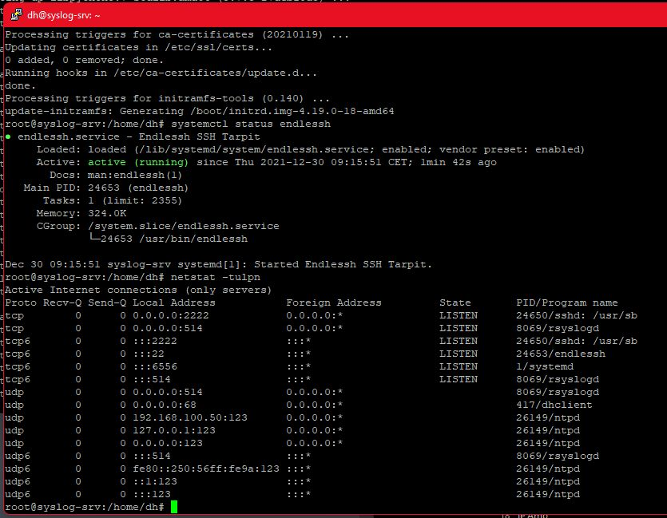

endlessh ist ein Linux SSH Server der als Honeypot dient.
Dabei gibt endlessh sehr, sehr langsam Anfragen an den Client zurueck.
Das Repository auf Github
Die Installation von endlessh erfolgt unter Debian via apt-get install.
sudo apt-get install endlessh -y
Wird Debian Buster eingesetzt, muss die /etc/apt/sources.list um die Backports ergaenzt werden, ansonsten findet apt das Paket nicht. Bei Bullseye und neuer wird endlessh direkt ueber die Standard Paketquellen installiert.
Nun legen wir die config an:
sudo nano /etc/endlessh/config
Hier fuegen wir folgendes ein:
# The port on which to listen for new SSH connections.
Port 22
# The endless banner is sent one line at a time. This is the delay
# in milliseconds between individual lines.
Delay 10000
# The length of each line is randomized. This controls the maximum
# length of each line. Shorter lines may keep clients on for longer if
# they give up after a certain number of bytes.
MaxLineLength 32
# Maximum number of connections to accept at a time. Connections beyond
# this are not immediately rejected, but will wait in the queue.
MaxClients 4096
# Set the detail level for the log.
# 0 = Quiet
# 1 = Standard, useful log messages
# 2 = Very noisy debugging information
LogLevel 0
# Set the family of the listening socket
# 0 = Use IPv4 Mapped IPv6 (Both v4 and v6, default)
# 4 = Use IPv4 only
# 6 = Use IPv6 only
BindFamily 0
Bevor jetzt der Dienst gestartet werden kann, muss noch die systemd Dienstkonfiguration bearbeitet werden:
sudo nano /etc/systemd/system/endlessh.service
Siehe auch die Diskussion unter Github.
## If you want Endlessh to bind on ports < 1024
## 1) run:
## setcap 'cap_net_bind_service=+ep' /usr/local/bin/endlessh
## 2) uncomment following line
AmbientCapabilities=CAP_NET_BIND_SERVICE
## 3) comment following line
#PrivateUsers=true
Nun starten wir endlessh:
sudo systemctl start endlessh
Anschliessend koennen wir via netstat -tulpn pruefen, ob sshd auf Port 2222 und endlessh auf Port 22 laeuft:
